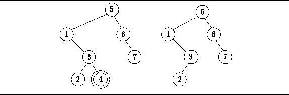
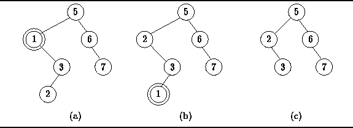

Data Structures and Algorithms
with Object-Oriented Design Patterns in Java
Data Structures and Algorithms
with Object-Oriented Design Patterns in JavaWhen removing an item from a search tree, it is imperative that the tree which remains satisfies the data ordering criterion. If the item to be removed is in a leaf node, then it is fairly easy to remove that item from the tree since doing so does not disturb the relative order of any of the other items in the tree.
For example,
consider the binary search tree shown in Figure  (a).
Suppose we wish to remove the node labeled 4.
Since node 4 is a leaf, its subtrees are empty.
When we remove it from the tree,
the tree remains a valid search tree
as shown in Figure (b).
(a).
Suppose we wish to remove the node labeled 4.
Since node 4 is a leaf, its subtrees are empty.
When we remove it from the tree,
the tree remains a valid search tree
as shown in Figure (b).

Figure: Removing a leaf node from a binary search tree.
To remove a non-leaf node,
we move it down in the tree until it becomes a leaf node
since a leaf node is easily deleted.
To move a node down we swap it with another
node which is further down in the tree.
For example, consider the search tree shown in Figure (a).
Node 1 is not a leaf since it has an empty left subtree
but a non-empty right subtree.
To remove node 1, we swap it with the smallest key in its right subtree,
which in this case is node 2, Figure (b).
Since node 1 is now a leaf, it is easily deleted.
Notice that the resulting tree remains a valid search tree,
as shown in Figure (c).

Figure: Removing a non-leaf node from a binary search tree.
To move a non-leaf node down in the tree, we either swap it with the smallest key in the right subtree or with the largest one in the left subtree. At least one such swap is always possible, since the node is a non-leaf and therefore at least one of its subtrees is non-empty. If after the swap, the node to be deleted is not a leaf, the we push it further down the tree with yet another swap. Eventually, the node must reach the bottom of the tree where it can be deleted.
 Copyright © 1998 by Bruno R. Preiss, P.Eng. All rights reserved.
Copyright © 1998 by Bruno R. Preiss, P.Eng. All rights reserved.